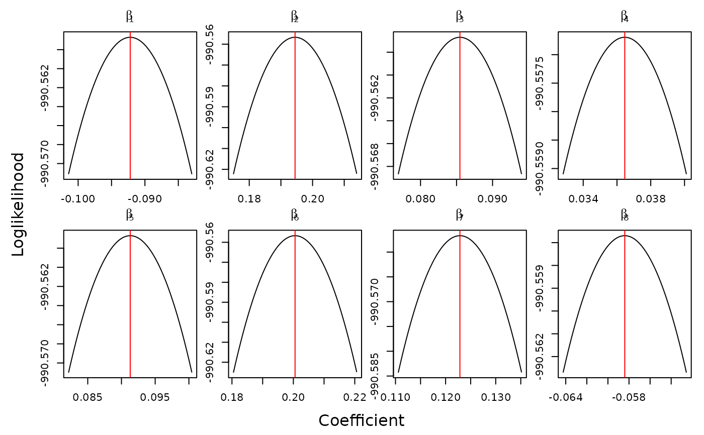

R/optimCheck-package.R
optimCheck-package.RdTools for checking that the output of an optimization algorithm is indeed at a local mode of the objective function. This is accomplished graphically by calculating all one-dimensional "projection plots" of the objective function, i.e., varying each input variable one at a time with all other elements of the potential solution being fixed. The numerical values in these plots can be readily extracted for the purpose of automated and systematic unit-testing of optimization routines.
Useful links:
# example: logistic regression
ilogit <- binomial()$linkinv
# generate data
p <- sample(2:10,1) # number of parameters
n <- sample(1000:2000,1) # number of observations
X <- matrix(rnorm(n*p),n,p) # design matrix
beta0 <- rnorm(p, sd = .1) # true parameter values
y <- rbinom(n, size = 1, prob = ilogit(X %*% beta0)) # response
# fit logistic regression
bhat <- coef(glm(y ~ X - 1, family = binomial))
# check convergence
# likelihood function
loglik <- function(beta, y, X) {
sum(dbinom(y, size = 1, prob = ilogit(X %*% beta), log = TRUE))
}
# projection plots
bnames <- parse(text = paste0("beta[", 1:p, "]"))
system.time({
oproj <- optim_proj(xsol = bhat,
fun = function(beta) loglik(beta, y, X),
xnames = bnames,
xlab = "Coefficient", ylab = "Loglikelihood")
})

#> user system elapsed
#> 0.207 0.417 0.163
# numerical summary
oproj # see ?summary.optproj for more information
#>
#> 'optim_proj' check on 8-variable maximization problem.
#>
#> Top 5 relative errors in potential solution:
#>
#> xsol D=xopt-xsol R=D/|xsol|
#> X1 -0.09220 -9.313e-05 -0.00101
#> X2 0.19450 1.964e-04 0.00101
#> X3 0.08547 8.633e-05 0.00101
#> X4 0.03646 3.683e-05 0.00101
#> X5 0.09130 9.222e-05 0.00101
#>
# elementwise differences between potential and optimal solution
diff(oproj) # same as summary(oproj)$xdiff
#> abs rel
#> X1 -9.313317e-05 -0.001010101
#> X2 1.964355e-04 0.001010101
#> X3 8.633245e-05 0.001010101
#> X4 3.682969e-05 0.001010101
#> X5 9.222004e-05 0.001010101
#> X6 2.025807e-04 0.001010101
#> X7 1.240967e-04 0.001010101
#> X8 -5.899198e-05 -0.001010101
# refit general purpose optimizer starting from bhat
# often faster than optim_proj, but less stable
system.time({
orefit <- optim_refit(xsol = bhat,
fun = function(beta) loglik(beta, y, X))
})
#> user system elapsed
#> 0.022 0.024 0.012
orefit
#>
#> 'optim_refit' check on 8-variable maximization problem.
#>
#> Top 5 relative errors in potential solution:
#>
#> xsol D=xopt-xsol R=D/|xsol|
#> X1 -0.09220 0 0
#> X2 0.19450 0 0
#> X3 0.08547 0 0
#> X4 0.03646 0 0
#> X5 0.09130 0 0
#>